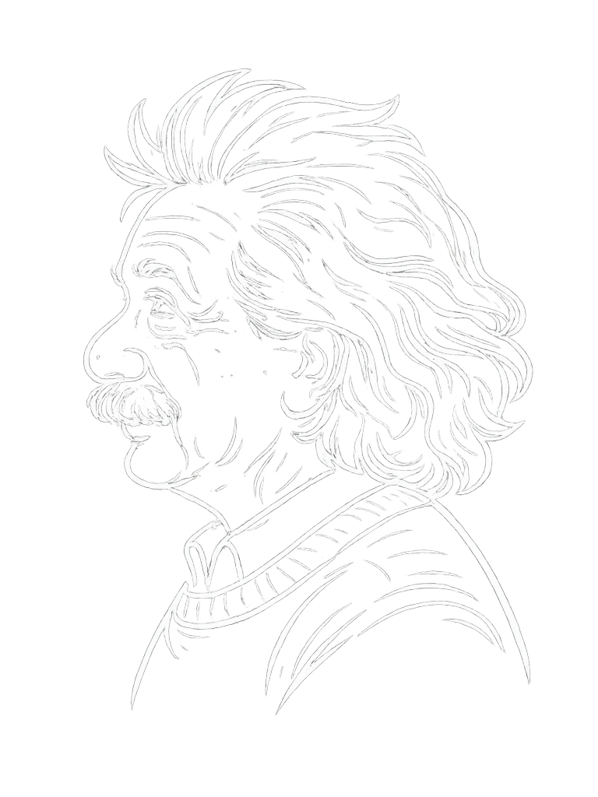
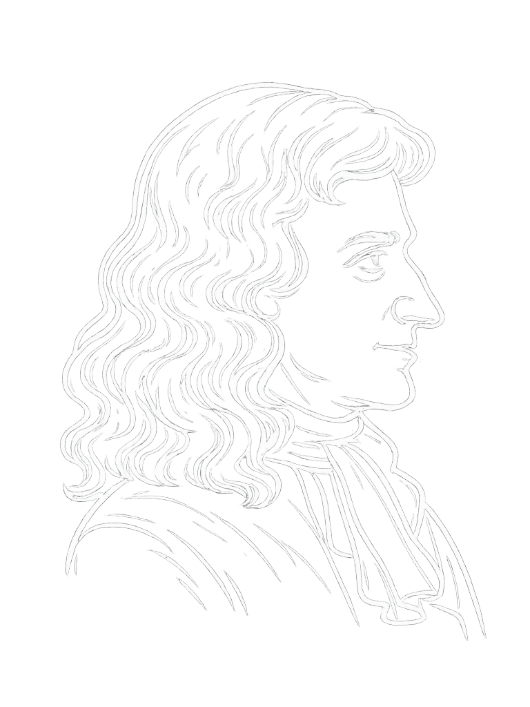

“Come si può rendere la scienza cool?”

Mission
“Come si può rendere la scienza cool?”


“Quali mezzi ho per distinguere le notizie false da quelle reali?”
Il progetto Veritas si propone di creare una piattaforma online dedicata alla socializzazione e alla divulgazione scientifica, aperta ad appassionati delle scienze, professionisti e giornalisti scientifici.
Fact Checking
Attraverso un processo chiaro e documentato, analizziamo fonti, controlliamo dati e presentiamo risultati accessibili a tutti. Ogni contenuto è pensato per costruire fiducia e combattere la disinformazione.
Team
Il nostro team unisce esperti scientifici, fact checker e comunicatori digitali per trasformare i dati in contenuti utili.
Contatti
Vuoi collaborare, proporre un controllo o ricevere aggiornamenti? Scrivici e ti risponderemo rapidamente.